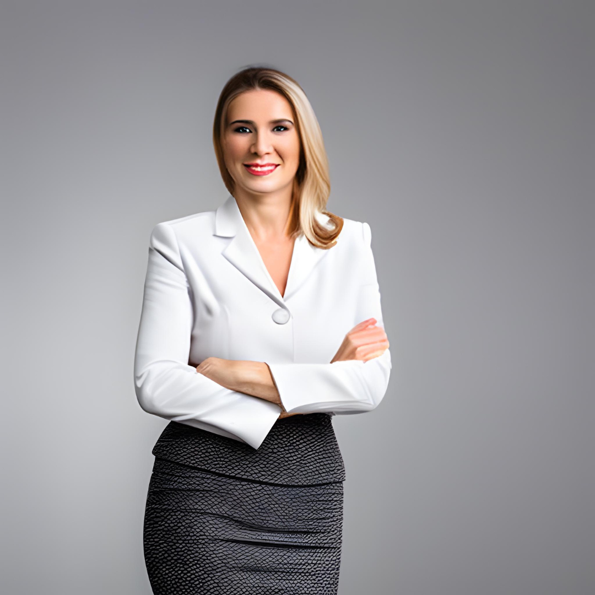

FUNDAÇÃO
A Blue Peace foi fundada em 2015, com sua sede em Fernando de Noronha, por um grupo de ativistas ambientais preocupados com a saúde dos oceanos e a preservação da vida marinha. Os fundadores, amantes da natureza, perceberam a necessidade urgente de agir para proteger o ecossistema marinho.
Inspirados pelo trabalho de outras organizações em todo o mundo, eles decidiram estabelecer sua própria instituição dedicada à conservação dos oceanos. Com o tempo, a Blue Peace cresceu e se tornou uma referência no campo da preservação marinha, colaborando com governos, empresas e outras organizações em projetos para a proteção dos ecossistemas marinhos em todo o mundo.
Breno Marques e Cláudia Lopes se conheceram na universidade, onde ambos estudavam Biologia Marinha. Enquanto Breno destacava-se em projetos de conservação de tubarões, Cláudia dedicava seu tempo no estudo da ecologia de recifes de coral.
Apesar de suas áreas de interesse serem distintas, os dois compartilhavam a mesma paixão por preservar os oceanos e garantir um futuro sustentável para as próximas gerações.
Após se formarem, Breno e Cláudia passaram alguns anos trabalhando em projetos de conservação em diferentes partes do mundo, até que decidiram se unir para fundar a Blue Peace em 2015. A organização foi criada com o objetivo de mobilizar a sociedade para a importância da preservação dos oceanos e oferecer soluções sustentáveis para problemas como a poluição, a sobrepesca e o aquecimento global.
Breno e Cláudia ficaram conhecidos no meio ambientalista pela sua abordagem inovadora e compromisso com a causa. Eles têm trabalhado incansavelmente para expandir a Blue Peace e torná-la uma referência mundial em conservação marinha.